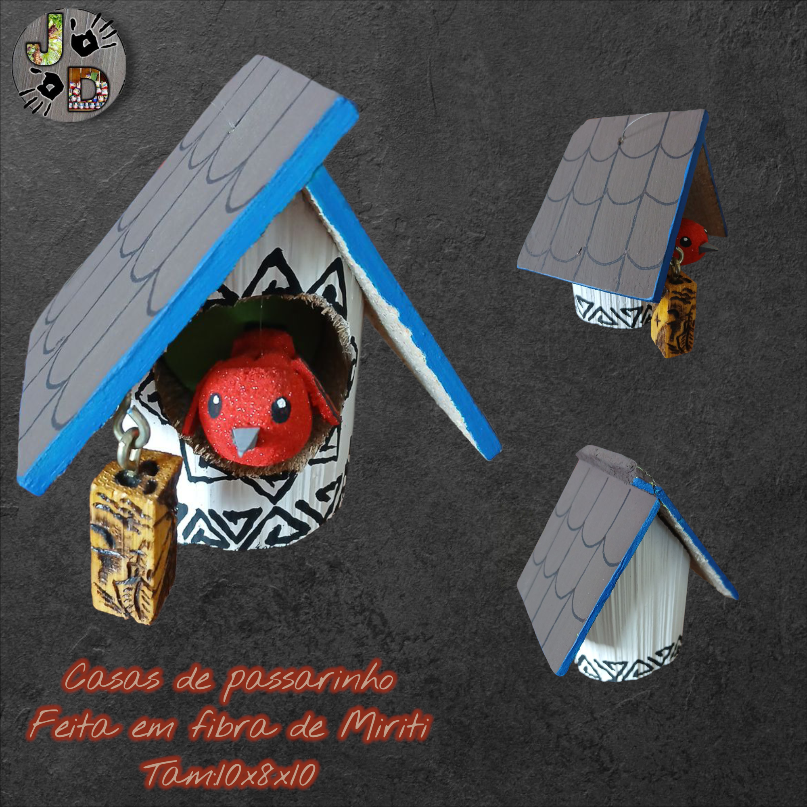
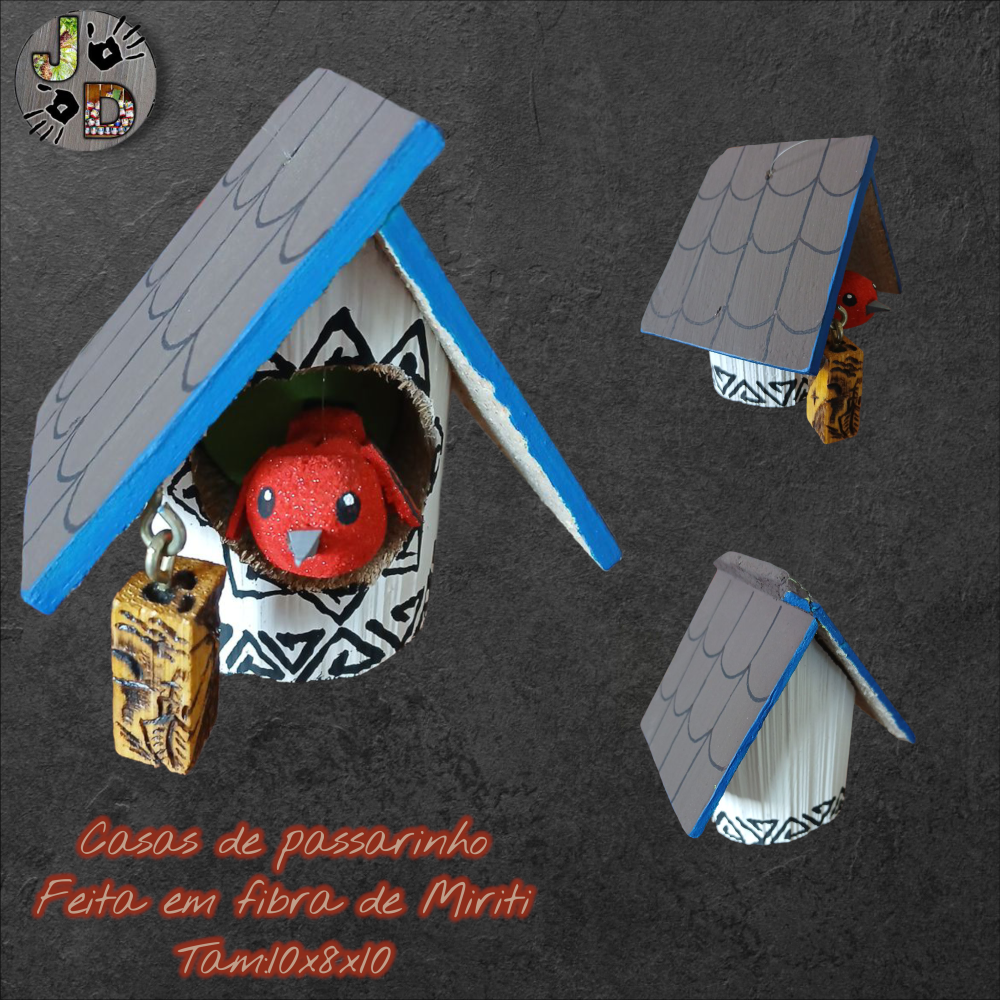
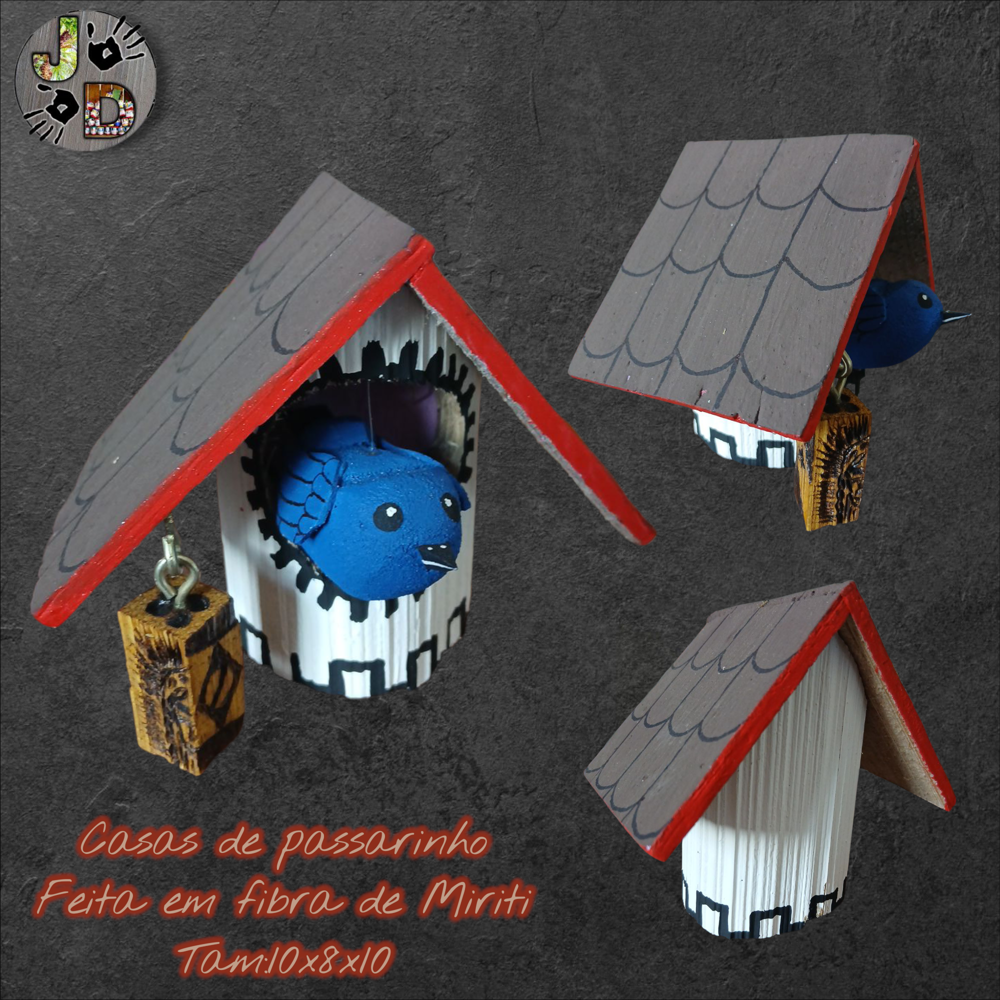
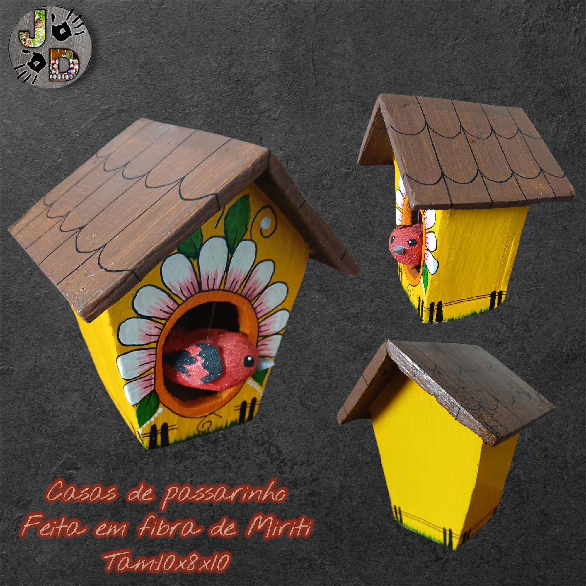
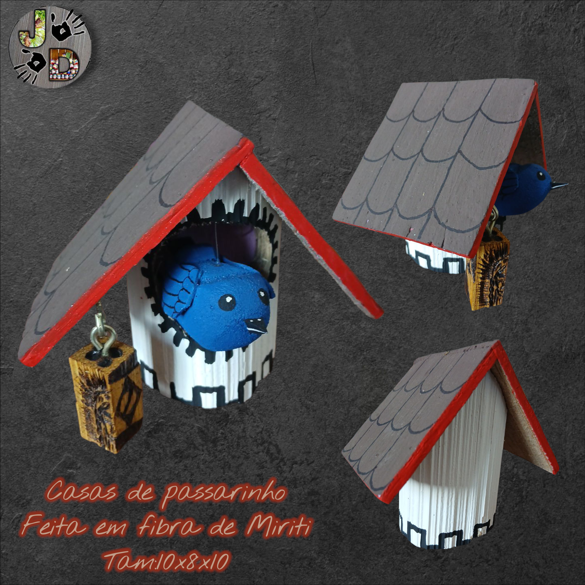
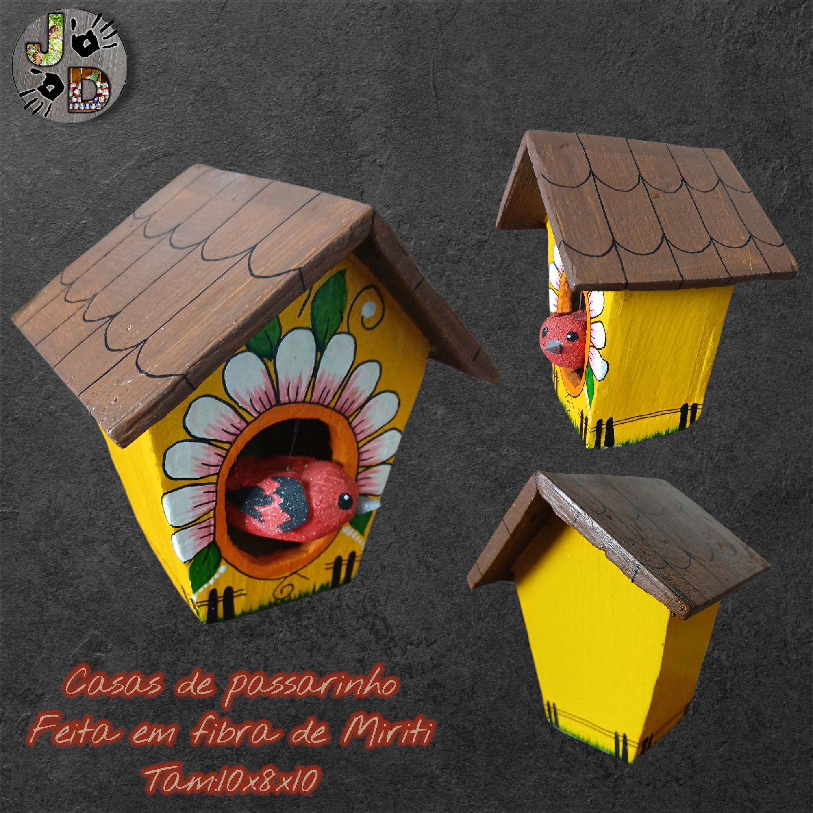

Casas de Passarinho


 

 





Casa de passarinhos artesanal em madeira de demolição, com acabamento natural e implementação de entrada para ninhos de aves locais.
A Evolução das Casas de Passarinhos Artesanais
As casas de passarinhos artesanais são mais que simples abrigos: refletem interação humana com o meio ambiente, respeito pela avifauna e expressão estética. A construção de casas ou nichos para pássaros remonta a práticas agrícolas, utilitárias e arquitetônicas nas civilizações antigas. :contentReference[oaicite:10]{index=10}
Origens e Significados Culturais
Na antiguidade egípcia, mesopotâmica e persa, estruturas semelhantes a casas de aves eram incorporadas em edifícios ou jardins para acomodar pombos ou outros pássaros, que desempenhavam papel simbólico, religioso ou prático (como controle de insetos). :contentReference[oaicite:11]{index=11} Já no Império Otomano e no Irã, existiam “palácios de pardais” e “columbários” elaborados, que além de função abrigadora, expressavam status arquitetônico. :contentReference[oaicite:12]{index=12}
Desenvolvimento e Design: Forma e Função
O design das casas de passarinhos artesanais demanda atenção a diversas variáveis: o tamanho da abertura de entrada (especifica à espécie alvo), a altura e orientação da instalação, ventilação, escoamento da água, e segurança contra predadores. A madeira deve ser não tratada (ou tratada com produtos não-tóxicos), e o acabamento externo pode ser natural ou pintado com cores suaves que não afugentem as aves.
No século XVIII-XIX, com o romantismo e o florescimento do paisagismo, casas decorativas de madeira ou metal tornaram-se populares em jardins europeus como elemento estético. No artesanato contemporâneo, muitos produtores se inspiram nesses estilos históricos, mas adaptam à produção em pequena escala, uso sustentável de madeira e mercado de peças únicas. :contentReference[oaicite:13]{index=13}
Materiais e Técnicas Artesanais
Artesãos que produzem casas de passarinhos trabalham desde a seleção da madeira (cedro, pinho, demolição), corte, montagem, lixamento, encaixes ou parafusos inox, aplicação de óleo natural ou verniz leve e instalação de gancho para pendurar. Muitas peças incorporam design criativo: telhados inclinados, varandas, janelas decorativas, painéis de vidrinho ou cobre, pintura personalizada ou texto gravado. Para venda como artesanato, são valorizados tanto itens funcionais (aptos para aves) quanto peças decorativas de jardim.
Import√¢ncia Ambiental e Valor Comercial
Produzir casas de passarinhos artesanais pode ser uma ótima linha de produto para o seu portfólio: madeira local sustentada, tema ecológico (a fauna local), design diferenciado e apelo para mercado de decoração e para amantes da natureza. Em marketing digital (TikTok/LinkedIn) pode-se explorar o “faça você mesmo”, “habitat para pássaros”, “decoração consciente” — temas com grande apelo.
Fonte: A Journey Through Time: The Fascinating History of Decorative Birdhouses. :contentReference[oaicite:14]{index=14}
Nesting Cavities – History of the Birdhouse. :contentReference[oaicite:15]{index=15}